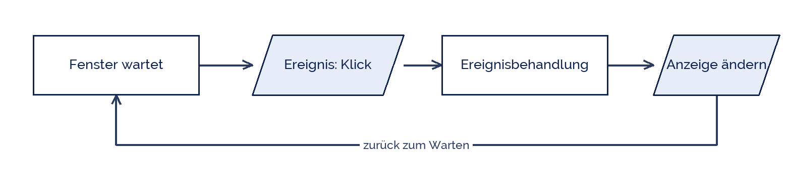

tjuusitalo
tjuusitalo
Good morning!
Nur das Schöne wird die Welt retten!
Fjodor Dostojewski
Nicht verzagen, Doc Alvers fragen!
Informatik — Grundkurs 13
Programme mit Oberfläche
Formular-Komponenten und Ereignisbehandlung — der Wechsel im Denken
Nicht verzagen, Doc Alvers fragen!
Kapitel 01
Der Unterschied
Vom Ablauf zum Ereignis
Nicht verzagen, Doc Alvers fragen!
Zwei Arten, ein Programm zu bauen
| Konsolenprogramm | Programm mit Oberfläche | |
|---|---|---|
| Ablauf | von oben nach unten | wartet auf Ereignisse |
| Eingabe | input() hält an | der Nutzer tippt, wann er will |
| Steuerung | das Programm bestimmt | der Nutzer bestimmt |
| Struktur | eine Folge | viele kleine Reaktionen |
Der Kern des Umdenkens: das Programm wartet, statt zu fragen
Diese Bauweise heißt ereignisgesteuert — event driven
Nicht verzagen, Doc Alvers fragen!
Die Ereignisschleife
Zwischen den Ereignissen tut das Programm nichts — es wartet
Eine lange Rechnung in der Behandlung friert die Oberfläche ein

Nicht verzagen, Doc Alvers fragen!
Kapitel 02
Die Bausteine
Widgets und ihre Aufgaben
Nicht verzagen, Doc Alvers fragen!
Die Komponenten, die ihr braucht
| Komponente | Aufgabe | in tkinter |
|---|---|---|
| Fenster | trägt alles | Tk() |
| Beschriftung | Text anzeigen | Label |
| Eingabefeld | Text entgegennehmen | Entry |
| Schaltfläche | Aktion auslösen | Button |
| Auswahl | eine Option aus mehreren | Radiobutton, Combobox |
| Ausgabe | Ergebnis zeigen | Label oder Text |
Jede Komponente ist ein Objekt — mit Attributen und Methoden, wie in Jgst. 12 modelliert
Das Layout legt fest, wo sie liegen: pack, grid oder place
Nicht verzagen, Doc Alvers fragen!
Ein vollständiges kleines Formular
import tkinter as tk
def berechnen(): # Ereignisbehandlung
try:
n = int(feld.get())
ausgabe.config(text=f'Quadrat: {n * n}')
except ValueError:
ausgabe.config(text='Bitte eine ganze Zahl eingeben')
fenster = tk.Tk()
tk.Label(fenster, text='Zahl:').grid(row=0, column=0)
feld = tk.Entry(fenster); feld.grid(row=0, column=1)
tk.Button(fenster, text='Rechne', command=berechnen).grid(row=1, column=0)
ausgabe = tk.Label(fenster, text=''); ausgabe.grid(row=2, column=0, columnspan=2)
fenster.mainloop() # Ereignisschleife startenNicht verzagen, Doc Alvers fragen!
Kapitel 03
Sauber bauen
Drei Regeln, die Ärger ersparen
Nicht verzagen, Doc Alvers fragen!
Was in der Praxis zählt
Rechnen und Anzeigen trennen: die Berechnung in eine eigene Funktion
So lässt sie sich testen, ohne das Fenster zu öffnen
Eingaben prüfen: alles aus einem Entry ist Text, auch „12“
Ein fehlgeschlagenes int() darf das Programm nicht abstürzen lassen
mainloop() steht zuletzt — danach läuft nur noch die Ereignisschleife
Nicht verzagen, Doc Alvers fragen!
Typische Fehler beim Einstieg
| Symptom | Ursache |
|---|---|
| Fenster erscheint nicht | mainloop() fehlt |
| Button reagiert sofort beim Start | command=berechnen() statt command=berechnen |
| Ergebnis ist Text statt Zahl | Entry liefert immer Text |
| Oberfläche friert ein | lange Rechnung in der Ereignisbehandlung |
| Widget unsichtbar | pack oder grid vergessen |
Der zweite Fehler ist der häufigste: die Klammern rufen die Funktion sofort auf
Nicht verzagen, Doc Alvers fragen!
Ein Programm mit Oberfläche wartet auf Ereignisse. Und alles, was aus einem Eingabefeld kommt, ist zuerst einmal Text.
Merksatz
Nicht verzagen, Doc Alvers fragen!
Fun Facts: Oberflächen
Die erste grafische Oberfläche entstand ab 1973 am Xerox PARC — mit Fenstern und Maus
tkinter gehört seit den 1990er Jahren zur Python-Standardbibliothek
Die Ereignisschleife heißt in fast jedem System gleich: event loop
Auch der Browser arbeitet so — JavaScript ist ereignisgesteuert
Faustregel aus der Praxis: die Oberfläche darf nie rechnen
Nicht verzagen, Doc Alvers fragen!
Eure Aufgabe am Rechner
Baut ein Formular: Eingabefeld, Button, Ausgabe — Quadratzahl berechnen
Trennt Berechnung und Anzeige in zwei Funktionen
Fangt eine fehlerhafte Eingabe ab und gebt eine verständliche Meldung
Erweitert um eine Auswahl: Quadrat, Wurzel oder Kehrwert
Provoziert drei der fünf typischen Fehler und lest die Meldungen
Nicht verzagen, Doc Alvers fragen!